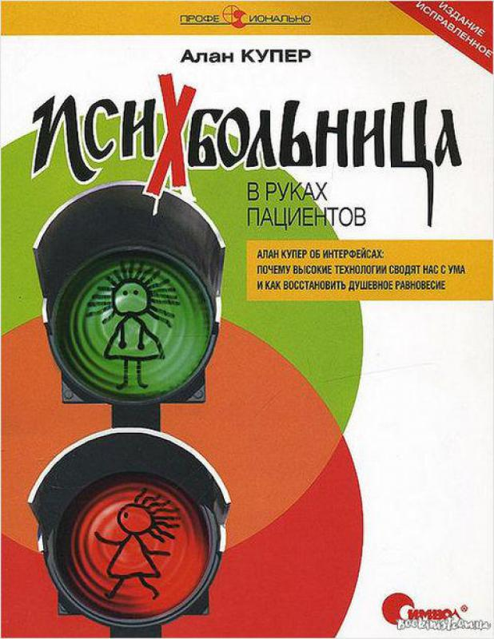

Психбольница в руках пациентов. Почему высокие технологии сводят нас с ума
|  |
Описание товараКак противостоять натиску компьютерных технологий, проникающих в нашу жизнь с ужасающей скоростью? Характеристики товара
Подробное описание товараНаши телефоны, фотокамеры, автомобили – все, что нас окружает, автоматизируются, программируются, создаются людьми, которые, стремясь получить выгоду от применения микросхем, уклонились от своей прямой обязанности – делать эти продукты простыми в применении. И это не преувеличение, это реальность. Наша жизнь все больше концентрируется вокруг превратностей, странностей, решений и катастроф индустрии высоких технологий. Разработчики программ, устройств и технологий думают не так, как мы. Облеченные полномочиями исполнительные лица ни на что не влияют в мире высоких технологий – здесь всем заправляют инженеры. Мы разрешили пациентам завладеть психбольницей. Алан Купер предлагает решение проблемы: программированию должно предшествовать проектирование. |